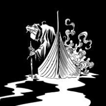

O vilão da história, inspirado claramente em Caronte, o barqueiro dos mortos do mundo grego. Caracterizado com a caveira de um boi, o ser poderoso tem um senhor acima dele e pede ajuda de Euclides, já velho e debilitado, para que que de um “fim” a este senhor.
Severino
O velho cangaceiro nega, Severino insiste, Euclides também insiste em dizer não e com este embate os dois concretizam ações que levaram há um longo período e sofrimento nesta história.
